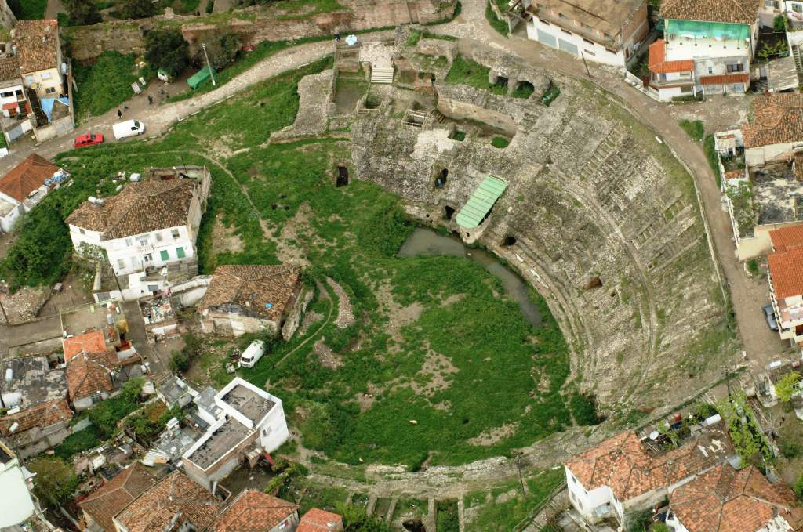
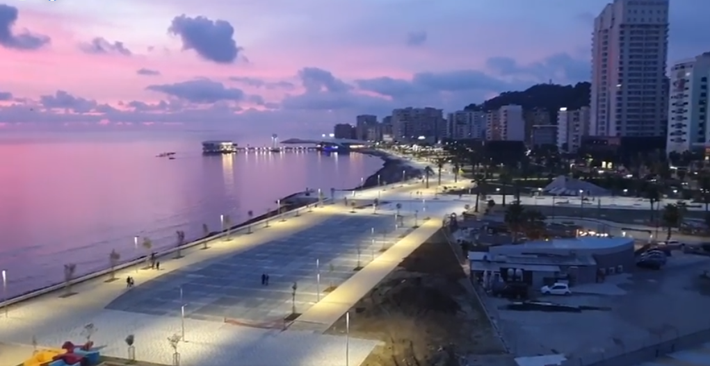
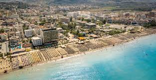
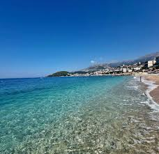
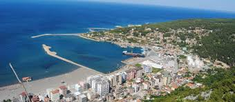

Vendet që duhet të vizitosh
Eksploro të
bukurën

★ 4.9

★ 4.7

★ 4.6
Qyteti më i lashtë bregdetar i Shqipërisë — 3 000 vjet histori, plazhe të arta dhe kuzinë mediterane.


Rëra e artë dhe uji kristalor — nga qendra e qytetit deri te bukuritë e fshehta.





Freskia e detit takohet me recetat e trashëguara brez pas brezi.
Frutat e freskëta të detit Adriatik me vaj ulliri dhe limon, recetë tradicionale peshkatarësh.
Çupra, levrek dhe skumbri të kapur çdo mëngjes, të pjekur me erëza mediterane.
Domate, kastravec, piper dhe djathë i bardhë — freskia verore shoqëruar me bukë misri.
Ëmbëlsirat tradicionale shqiptare. Trileçja e Durrësit konsiderohet ndër më të mirat.
Kallmet dhe Shesh i Zi — varietete autoktonë me karakter unik mesdhetar.
Kulturë e ngulitur thellë — kafenetë historike pranë shëtitores ju prisin çdo mëngjes.
Aeroporti "Nënë Tereza" ndodhet 30 km larg. Autobusat dhe taksi-et lidhin Tiranën me Durrësin çdo orë.
Maji–Shtatori është sezoni ideal. Qershori dhe Shtatori ofrojnë klimë të këndshme me më pak turmë.
Leku shqiptar (ALL). Eurot pranohen gjerësisht. Buxheti mesatar: 3 000–5 000 ALL/ditë.
Nga hotele luksoze deri te butonikë të rehatshëm. Çmimet: 20–150€/natë. Rezervoni paraprakisht.
Taksitë dhe Bolt funksionojnë mirë. Për bregdet mund të qiratohet biçikletë ose motoçikletë.
Qytet i sigurt për turistët. Numri i urgjencës: 112. Policia Turistike është aktive gjatë sezonit.
Gjeni atraksionet, hotelet dhe restorantet kryesore të qytetit.